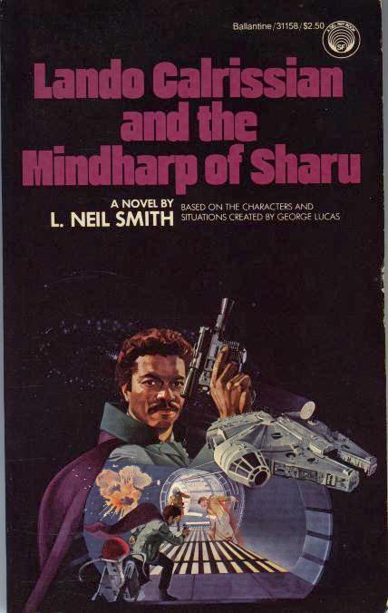

|

Lando Calrissian and the Mindharp of Sharu
by L. Neil Smith
Youthful adventures
of Star Wars' famous gambler before Han Solo won the Millenium Falcon
from him. Re-released in omnibus edition titled The Lando
Calrissian Adventures, Summer, 1994.
"Based on the characters and situations created by George Lucas"
New York: A Del Rey Book Published by Ballantine Books, 1983
182 pages, mass-market paperback
Library of Congress Catalog Card Number: 83-90767
ISBN 0-345-31158-2
First Edition: July 1983
Cover art by William Schmidt
|